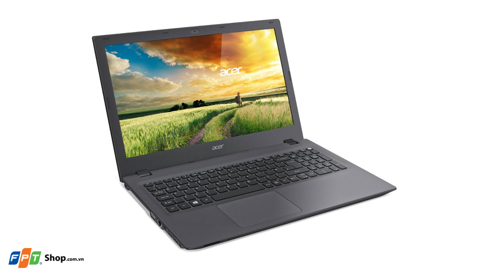
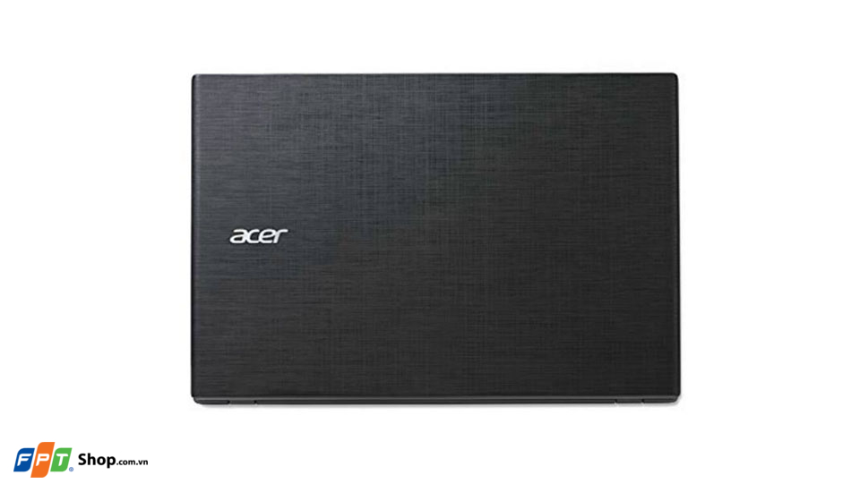
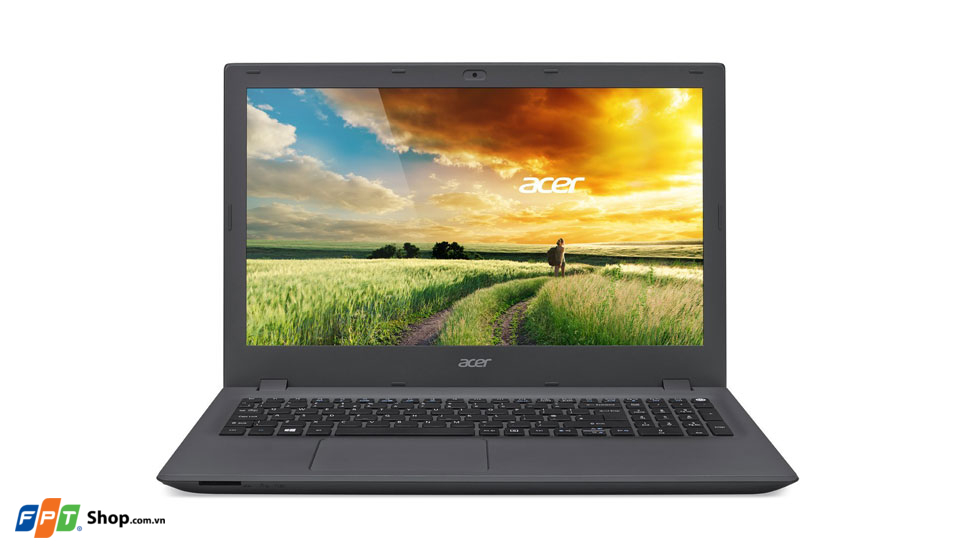
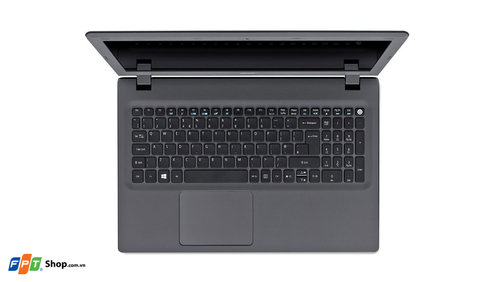
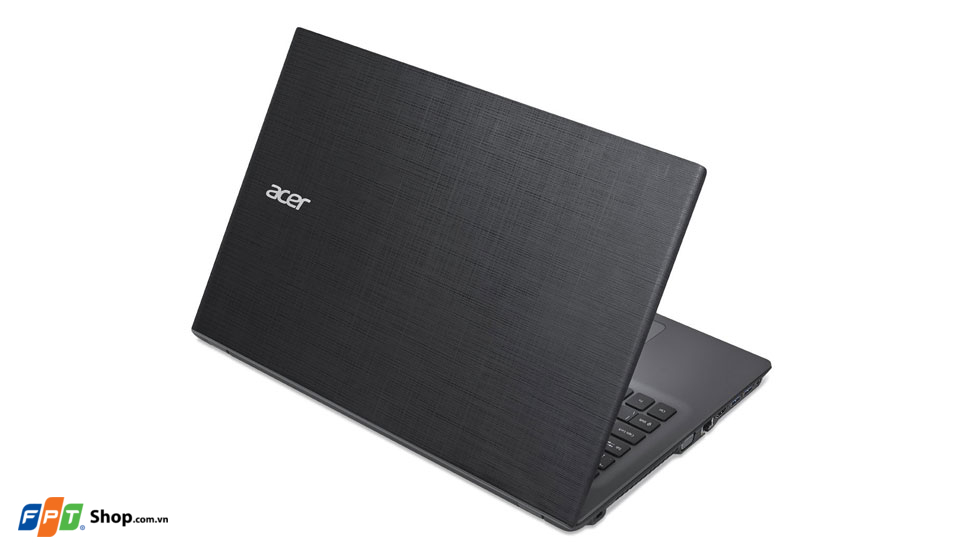

E5-573G-396X là chiếc laptop nhỏ gọn mà Acer mới vừa giới thiệu đến người dùng, chiếc máy được thiết kế hướng đến sự hoàn hảo dành cho trong các hoạt động làm việc, học tập hay giải trí hàng ngày.
Thiết kế nhỏ gọn, cao cấp
ACER E5-573G-396X là chiếc máy tính xách tay có kích thước tổng thể khá nhỏ gọn, mà vẫn giữ đươc yếu tố thời trang với các đường cắt tỉ mỉ, cân đối giữa các phần tạo cho người dùng có cảm giác chiếc máy vô cùng cao cấp. Với chất lượng hoàn thiện ở mức cao, máy thể hiện sự chắc chắn cần thiết giúp cho người dùng có thể yên tâm sử dụng mà không lo xảy ra hỏng hóc trong quá trình sử dụng hàng ngày.
Cấu hình mạnh mẽ với vi xử lý đến từ Intel
Mặc dù có kích thước nhỏ gọn nhưng E5-573G-396X vẫn được trang bị bộ vi xử lý Intel Core i3-5005U 2GHz, cùng RAM 4GB cho khả năng thực thi các tác vụ một cách trơn tru, đa nhiệm mượt mà nhưng vẫn tiết kiệm pin cho máy. Cùng với card đồ họa rời Nvidia GT940M 2GB đáp ứng hoàn hảo các tác vụ cơ bản hay ứng dụng nặng theo yêu cầu của người dùng trong các hoạt động làm việc, học tập hay giải trí hàng ngày. Ngoài ra, với dung lượng bộ nhớ trong lên đến 500 GB, giúp cho người dùng có thể sử dụng để lưu trữ hình ảnh, video hay tài liệu cần thiết một cách thoải mái.
Màn hình 15.6” Full HD rõ nét
E5-573G-396X sở hữu màn hình có kích thước 15.6 inches cùng độ phân giải Full HD 1920x1080 pixels, và sử dụng tấm nền màn hình HD LED, cùng sự tinh chỉnh màu sắc từ nhà sản xuất Acer giúp cho hình ảnh thu được từ màn hình này có màu sắc trung thực và tự nhiên. Với chất lượng màn hình tốt cùng kích thước lớn, E5-573G-396X giúp người dùng có thể làm việc, học tập hay giải trí vô cùng thoải mái và dễ dàng.
Bàn phím dạng chiclet Full-Size, Touchpad rộng rãi
Bàn phím trên E5-573G-396X là bàn phím dạng chiclet có kích thước Full-Size với khoảng cách giữa các phím được sắp xếp hợp lí, độ bền cao, cùng hành trình phím ngắn cho cảm giác gõ cực kì tốt và đảm bảo sự chính xác trong quá trình nhập liệu. Trong khi đó, Touchpad trên máy có kích thước lớn và mịn, cho phép người dùng có thể sử dụng thoải mái để thao tác mà không cần đến chuột rời.
Đầy đủ các kết nối tiện dụng
Máy được trang bị đầy đủ các cổng kết nối như LAN, HDMI, USB 3.0 tốc độ cao cùng các kết nối không dây Bluetooth, WiFi đáp ứng đầy đủ và hoàn hảo các nhu cầu sử dụng của người dùng hàng ngày. Với các đặc điểm nổi bật cùng mức giá hợp lí, ACER E5-573G-396X trở thành một chiếc laptop hoàn hảo dành cho tất cả mọi người.